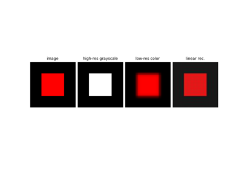

TensorList
- class deepinv.utils.TensorList(x)[source]
Bases:
objectRepresents a list of
torch.Tensorwith different shapes. It allows to sum, flatten, append, etc. lists of tensors seamlessly, in a similar fashion totorch.Tensor.- Parameters:
x – a list of
torch.Tensor, a singletorch.Tensoror a TensorList.
- append(other)[source]
Appends a
torch.Tensoror a list oftorch.Tensorto the list.
- flatten()[source]
Returns a
torch.Tensorwith a flattened version of the list of tensors.
Examples using TensorList:

Stacking and concatenating forward operators.
Stacking and concatenating forward operators.